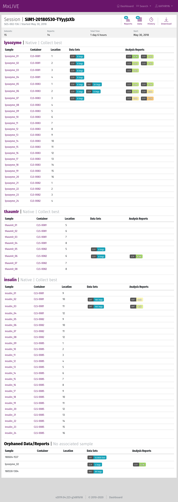
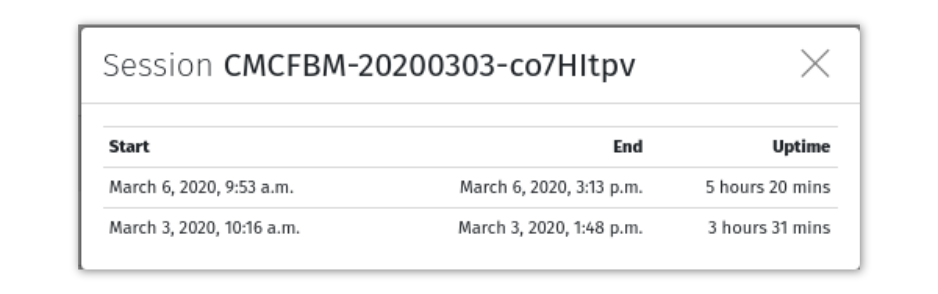

Sessions¶
Sessions are managed automatically when you open MxDC on the beamline to collect data. If you have a session that was active in the past seven days, that session is extended. Otherwise, a new session is created. When a new session is created:
a directory is created with a name determined by your session ID
MxLIVE begins tracking meta-data for that session, like active time (whenever MxDC is open) and the number of datasets and reports created.
The toolbar gives access to lists of Datasets and Reports contained within the session, the session history, and a download of the entire session directory.
The session page is organized in groups, listing every group that has a sample with a dataset collected during that session. Datasets are displayed next to the sample on which they were collected. Analysis reports for those datasets are also listed with each sample in a colour-coded display based on assigned scores. Clicking on a dataset will open the data viewer, and clicking on the report will bring you to the full report page.
History¶
There is an entry in the session history for every time MxDC was open. The session’s total time is a sum of the uptime for all entries.
Download¶
Clicking the “Download” button will create a tar file of the entire session directory, which is streamed to you through your browser. Since the download may begin before the tar file is fully created, the final download size is unknown, so you will likely not have an accurate estimated remaining time for the download. Depending on the size of the archive, it could take a long time.
Warning
Depending on storage limitations at the beamline, your session may be deleted after some time. Meta-data will remain on MxLIVE indefinitely. If you are unable to download your session through MxLIVE, the contents of the directory has likely been removed from on-site disks. Please check with beamline staff to confirm.